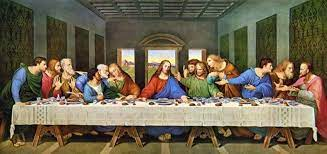

Leonardo da Vinci

Leonardo di ser Piero da Vinci (Bu ses hakkındatelaffuz (yardım·bilgi)) (15 Nisan 1452 - 2 Mayıs 1519), Rönesans döneminde yaşamış İtalyan hezârfen, döneminin önemli bir filozofu, astronomu, mimarı, mühendisi, mucidi, matematikçisi, anatomisti, müzisyeni, heykeltıraşı, botanisti, jeoloğu, kartografı, yazarı ve ressamıdır. En tanınmış yapıtları Vitruvius Adamı (1490-1492), Mona Lisa (1503-1507) ve Son Akşam Yemeği dir (1495-1497). Rönesans sanatını doruğuna ulaştırmış, yalnız sanat yapısına değil, çeşitli alanlardaki araştırmaları ve buluşlarıyla da tanınan, dünyanın gelmiş geçmiş en büyük sanatçılarından ve dehalarından biri kabul edilmektedir.[1]

SON AKSAM YEMEYİ
Son Akşam Yemeği ya da Son Yemek (İtalyanca: Il Cenacolo ya da L'Ultima Cena), 15. yüzyılda Milano'da Leonardo da Vinci tarafından Duke Lodovico Sforza'nın isteği üzerine yapılmış fresktir. Hristiyan inanışına göre, İsa Mesih'in Romalı askerlerce tutuklanmasından bir gün önce (Pesah Günü öncesi) havarileriyle yediği son akşam yemeğini ifade eder. Son Akşam Yemeği'inde İsa ve Havarileri Kutsal Kase'den şarap içiyorlar ve ekmek yiyorlardı.